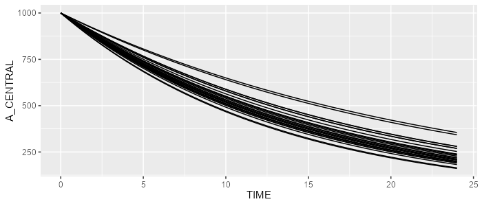
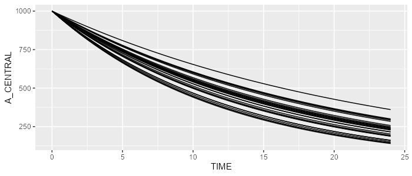

For this exercise, we’ll need the campsismod package. This package can be loaded as follows:
Assume a very simple 1-compartment PK model with first-order eliminate rate K. Say this parameter has a typical value of log(2)/12≈0.06 (where 12 is the elimination half life) and has 15% CV. Let’s also initiate the central compartment to 1000.
This can be translated into the following CAMPSIS model ( download Notepad++ plugin for CAMPSIS ):
Minimalist model edited in Notepad++
Let’s now create our theta.csv with our single parameter K as follows:
Edition of THETA’s in Excel
And finally, let’s also create our omega.csv to include inter-individual variability on K:
Edition of OMEGA’s in Excel
This model can now be loaded by campsismod…
model <- read.campsis("resources/minimalist_model/")## Warning in read.allparameters(folder = folder): No file 'sigma.csv' could be
## found.Let’s simulated this model in CAMPSIS:
library(campsis)
dataset <- Dataset(25) %>% add(Observations(seq(0,24,by=0.5)))
results <- model %>% simulate(dataset=dataset, seed=1)
spaghettiPlot(results, "A_CENTRAL")
The same model can be created programmatically. First, let’s create an empty CAMPSIS model.
model <- CampsisModel()Then, let’s define the equation of our model parameter K.
We can add an ordinary differential equation as follows:
We can init the central compartment as well on the fly:
model <- model %>% add(InitialCondition(compartment=1, "1000"))Finally, let’s define our THETA_K and ETA_K:
model <- model %>% add(Theta("K", value=0.06))
model <- model %>% add(Omega("K", value=15, type="cv%"))This model can simulated by CAMPSIS as well. Powerful, isn’t it?
library(campsis)
dataset <- Dataset(25) %>% add(Observations(seq(0,24,by=0.5)))
results <- model %>% simulate(dataset=dataset, seed=2)
spaghettiPlot(results, "A_CENTRAL")